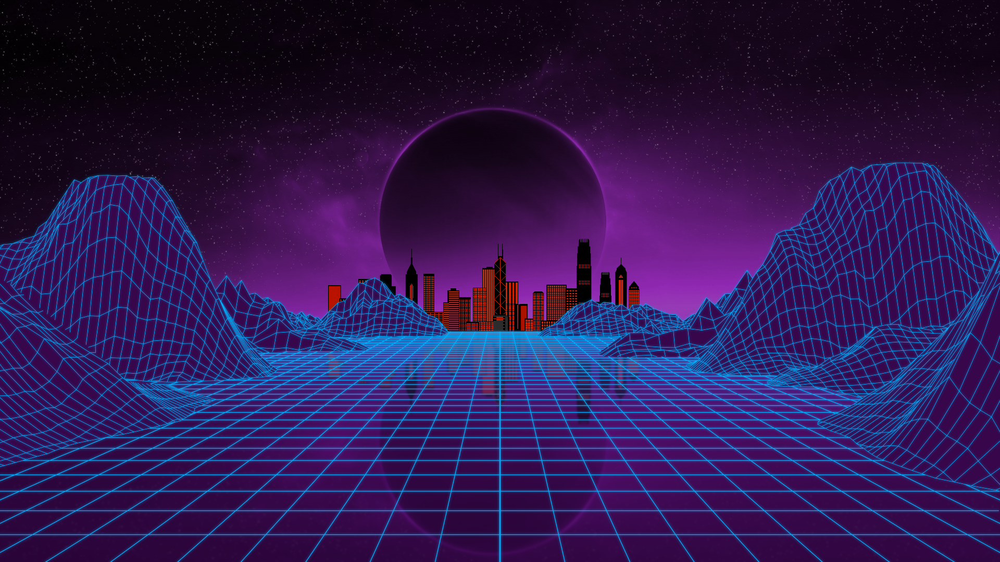

M06_05_FT_01 - Reacció a esdeveniments

Las tres ventanas superiores sirven para demostrar el uso de los eventos.
1. Click en la imagen para mostrar un alert() que dice el elemento que hemos hecho click
2. Click en el botón para mostrar un alert() que dice el elemento que hemos hecho click
3. Reloj creado con la función setInterval()
Finalmente tenemos un botón que permite añadir tareas para demostrar el uso de addEventListener